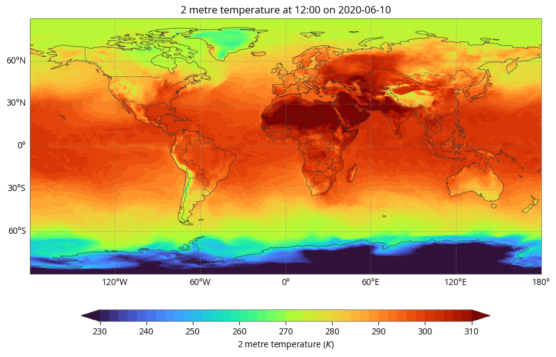

Author: EUMETSAT
Copyright: 2024 EUMETSAT
Licence: MIT
Destination Earth - ERA5 hourly data on single levels from 1940 to present - Data Access using DEDL HDA#
Documentation DestinE Data Lake HDA
Author: EUMETSAT
Credit: Earthkit and HDA Polytope used in this context are both packages provided by the European Centre for Medium-Range Weather Forecasts (ECMWF).
DEDL Harmonised Data Access is used in this example.
Obtain Authentication Token#
import requests
import json
import os
from getpass import getpass
import destinelab as deauth
First, we get an access token for the API
DESP_USERNAME = input("Please input your DESP username or email: ")
DESP_PASSWORD = getpass("Please input your DESP password: ")
auth = deauth.AuthHandler(DESP_USERNAME, DESP_PASSWORD)
access_token = auth.get_token()
if access_token is not None:
print("DEDL/DESP Access Token Obtained Successfully")
else:
print("Failed to Obtain DEDL/DESP Access Token")
auth_headers = {"Authorization": f"Bearer {access_token}"}
Response code: 200
DEDL/DESP Access Token Obtained Successfully
Query using the DEDL HDA API#
Filter#
We have to setup up a filter and define which data to obtain.
datechoice = "2020-06-10T10:00:00Z"
filters = {
key: {"eq": value}
for key, value in {
"format": "grib",
"variable": "2m_temperature",
"time": "12:00"
}.items()
}
Make Data Request#
response = requests.post("https://hda.data.destination-earth.eu/stac/search", headers=auth_headers, json={
"collections": ["EO.ECMWF.DAT.REANALYSIS_ERA5_SINGLE_LEVELS"],
"datetime": datechoice,
"query": filters
})
if(response.status_code!= 200):
(print(response.text))
# Requests to EO.ECMWF.DAT.REANALYSIS_ERA5_SINGLE_LEVELS always return a single item containing all the requested data
#print(response.json())
product = response.json()["features"][0]
#product id
product["id"]
'ERA5_SL_20200610_20200610_25bdeb1e296fb6b3dc4a0edf0554ada5f66b6793'
Once our product found, we download the data.#
from IPython.display import JSON
# DownloadLink is an asset representing the whole product
download_url = product["assets"]["downloadLink"]["href"]
HTTP_SUCCESS_CODE = 200
HTTP_ACCEPTED_CODE = 202
direct_download_url=''
response = requests.get(download_url, headers=auth_headers)
if (response.status_code == HTTP_SUCCESS_CODE):
direct_download_url = product['assets']['downloadLink']['href']
elif (response.status_code != HTTP_ACCEPTED_CODE):
print(response.text)
print(download_url)
response.raise_for_status()
https://hda.data.destination-earth.eu/stac/collections/EO.ECMWF.DAT.REANALYSIS_ERA5_SINGLE_LEVELS/items/ERA5_SL_20200610_20200610_25bdeb1e296fb6b3dc4a0edf0554ada5f66b6793/download?provider=cop_cds&_dc_qs=%257B%2522data_format%2522%253A%2B%2522grib%2522%252C%2B%2522day%2522%253A%2B%255B%252210%2522%255D%252C%2B%2522download_format%2522%253A%2B%2522zip%2522%252C%2B%2522format%2522%253A%2B%2522grib%2522%252C%2B%2522month%2522%253A%2B%255B%252206%2522%255D%252C%2B%2522product_type%2522%253A%2B%2522reanalysis%2522%252C%2B%2522time%2522%253A%2B%252212%253A00%2522%252C%2B%2522variable%2522%253A%2B%25222m_temperature%2522%252C%2B%2522year%2522%253A%2B%255B%25222020%2522%255D%257D
If the data is already available in the cache we can directly download it.
If the data is not available, we can see that our request is in queuedstatus.
We will then poll the API until the data is ready and then download it.
Please note that the basic HDA quota allows a maximum of 4 requests per second. The following code limits polling to this quota.
pip install ratelimit --quiet
Note: you may need to restart the kernel to use updated packages.
from tqdm import tqdm
import time
import re
from ratelimit import limits, sleep_and_retry
# Set limit: max 4 calls per 1 second
CALLS = 4
PERIOD = 1 # seconds
@sleep_and_retry
@limits(calls=CALLS, period=PERIOD)
def call_api(url,auth_headers):
response = requests.get(url, headers=auth_headers, stream=True)
return response
# we poll as long as the data is not ready
if direct_download_url=='':
while url := response.headers.get("Location"):
print(f"order status: {response.json()['status']}")
response = call_api(url,auth_headers)
if (response.status_code not in (HTTP_SUCCESS_CODE,HTTP_ACCEPTED_CODE)):
(print(response.text))
response.raise_for_status()
filename = re.findall('filename=\"?(.+)\"?', response.headers["Content-Disposition"])[0]
total_size = int(response.headers.get("content-length", 0))
print(f"downloading {filename}")
with tqdm(total=total_size, unit="B", unit_scale=True) as progress_bar:
with open(filename, 'wb') as f:
for data in response.iter_content(1024):
progress_bar.update(len(data))
f.write(data)
order status: accepted
downloading 76028069b1c793a4b8e7fa28ae8bd823.zip
100%|██████████| 1.75M/1.75M [00:01<00:00, 1.73MB/s]
EarthKit#
Lets plot the result file [EarthKit Documentation] https://earthkit-data.readthedocs.io/en/latest/index.html
This section requires that you have ecCodes >= 2.35 installed on your system.
You can follow the installation procedure at https://confluence.ecmwf.int/display/ECC/ecCodes+installation
import earthkit.data
import earthkit.maps
import earthkit.regrid
data = earthkit.data.from_source("file", filename)
data.ls
earthkit.maps.quickplot(data,#style=style
)
